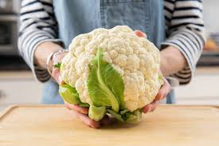

CAULIFLOWER
Introduction

Cauliflower has a high nutritional value because of its high levels of antioxidant compounds, namely glucosinolates, vitamins, phenolic compounds, and carotenoids, that exert beneficial effects on our health. These substances are commonly called “phytochemicals,” and their integration into our diet could slow down the development of chronic diseases, such as various cancers and coronary heart disease. The chapter describes the nutritional composition of cauliflower, particularly focusing on the phytochemicals and the antioxidant properties of this vegetable, analyzing the factors that may influence the antioxidant content, such as the genotype, the environmental variations, and the agronomic conditions. Finally, an overview on new promising uses of cauliflower by-products is given, since the large amount of cauliflower waste constitutes an important source of high-added-value compounds.
Cauliflower is a popular vegetable mainly sold fresh, although there has been increasing interest in commercialization as a minimally processed or frozen product in recent years (Sanz-Cervera et al., 2007). Tissue browning is the main postharvest problem of fresh cauliflower, along with floret opening, stem firmness loss, and undesirable odor development, which directly decreases shelf life and consumer purchase. Several techniques have been used to extend the shelf life of cauliflower, including packaging (Dhall et al., 2010), hurdle technology with different concentration and combination of salt, potassium metabisulfite, and citric acid after blanching (Barwal et al., 2005), and combinations of different methods, such as ultraviolet light and hydrogen peroxide (Hadjok et al., 2008). Zhan et al. (2014b) showed that light exposure retarded cauliflower head tissue browning by inhibiting PPO and POD browning enzyme activity, meanwhile preserving total phenols and vitamin C contents during cool storage in comparison with darkness. The cauliflower heads were still marketable after 7 days storage with the largest fresh weight loss being 1.8%. Boumail et al. (2016) showed that cauliflowers treated with coatings with incorporation of essential oils had good antimicrobial effect and allowed to inhibit Listeria innocua after 7 days of storage at 4°C, with minor changes in respiration rate and no differences were visually observed on cauliflowers
Nutrition
Cauliflower is a highly nutritious cruciferous vegetable that offers a variety of essential vitamins, minerals, and beneficial plant compounds. Here are some key points about the nutritional value of cauliflower:
- Low in Calories and Carbohydrates: Cauliflower is low in calories and carbohydrates, making it a great choice for those watching their calorie intake or following low-carb diets. One cup (128 grams) of raw cauliflower contains only 25 calories and 5 grams of carbohydrates.
- Fiber: Cauliflower is a good source of dietary fiber, providing about 2.5 grams per cup (128 grams). Fiber is important for digestive health, maintaining regularity, and contributing to feelings of fullness.
- Vitamins and Minerals:
- Vitamin C: Cauliflower is an excellent source of vitamin C, providing around 77% of the recommended daily intake in one cup.
- Vitamin K: It is a good source of vitamin K, which is essential for blood clotting and bone health.
- Folate: Cauliflower provides a decent amount of folate, a B vitamin important for cell growth and development.
- Other minerals: It also contains smaller amounts of minerals like potassium, manganese, phosphorus, and magnesium.
- Antioxidants: Cauliflower is rich in antioxidants, including vitamin C, as well as phytochemicals like glucosinolates and carotenoids, which may help protect against oxidative stress and chronic diseases.
- Cancer-Fighting Compounds: Cauliflower contains sulfur-containing compounds like sulforaphane and indole-3-carbinol, which have been studied for their potential cancer-fighting properties, particularly against prostate, breast, and colon cancers.
- Low in Fat and Cholesterol: Like most vegetables, cauliflower is naturally low in fat and cholesterol-free, making it a heart-healthy choice.
Cauliflower can be enjoyed raw, steamed, roasted, or incorporated into various dishes. Its mild flavor and versatility make it a great addition to a healthy and balanced diet, providing essential nutrients while being low in calories and carbohydrates.
Soil and Nutrition
Here are the key points regarding soil and nutritional requirements for growing cauliflower:
Soil Requirements:
- Soil Type: Cauliflower grows best in well-draining, fertile loams or sandy loams with good moisture-holding capacity. Heavy clay soils can cause stunted growth and poor head development.
- Soil pH: The ideal soil pH range for cauliflower is between 6.0 and 7.5. Acidic soils (pH below 6.0) may require liming to raise the pH for optimal growth.
- Soil Preparation: Cauliflower requires a deep, well-prepared seedbed. Incorporate well-rotted manure or compost into the soil before planting to improve soil structure and fertility.
Nutrient Requirements:
- Nitrogen (N): Cauliflower has a high nitrogen requirement, especially during the head formation stage. Typical nitrogen application rates range from 100 to 150 pounds per acre.
- Phosphorus (P): Phosphorus is essential for root development, curd (head) formation, and overall plant growth. Recommended rates range from 60 to 120 pounds of P₂O₅ per acre.
- Potassium (K): Potassium plays a role in water regulation, disease resistance, and overall plant vigor. Typical application rates range from 60 to 120 pounds of K₂O per acre.
- Boron (B): Cauliflower is sensitive to boron deficiency, which can cause hollow stem and discolored heads. A small amount of boron fertilizer or borax may be required in deficient soils.
Nutrient Management:
- Soil Testing: Conducting soil tests before planting helps determine the existing nutrient levels and guides the appropriate fertilizer application rates.
- Timing of Application: Apply a portion of the recommended nitrogen, phosphorus, and potassium as a basal dose before planting or transplanting. Split the remaining nitrogen into two or three side-dressings during the growing season, especially during head formation.
- Fertilizer Sources: Organic sources like manure, compost, and green manures can provide nutrients and improve soil health, but inorganic fertilizers may be needed to supplement nutrient requirements.
- Nutrient Deficiency Symptoms: Nitrogen deficiency can cause stunted growth and pale green leaves, while phosphorus deficiency can result in purple or reddish discoloration of leaves and delayed head formation. Potassium deficiency can cause leaf scorching and poor head development.
Proper soil management and balanced nutrition are essential for achieving good cauliflower yields and quality heads. Following recommended practices for soil preparation, fertilizer application, and nutrient management can help optimize cauliflower production while promoting sustainable soil health.
How to plant Cauliflower
Here are the steps to plant cauliflower:
-
Choose the right variety: Select a cauliflower variety suitable for your growing region and climate. Some popular varieties include Snow Crown, Early Snowball, and Candid Charm.
- Start seeds indoors: Cauliflower seeds can be started indoors 4-6 weeks before the last expected frost date in your area. Sow the seeds about 1/4 inch deep in a seed-starting tray or containers filled with a seed-starting mix.
-
Prepare the soil: Cauliflower prefers well-draining, fertile soil that's slightly acidic (pH 6.0-6.8). Amend the soil with compost or well-rotted manure before planting.
-
Transplanting: When the seedlings are 4-6 inches tall and have developed their first set of true leaves, they can be transplanted into the garden. Choose a sunny location with consistent moisture. Space the plants 18-24 inches apart in rows 2-3 feet apart.
- Hardening off: About a week before transplanting, start hardening off the seedlings by gradually exposing them to outdoor conditions for a few hours each day.
- Watering: Keep the soil consistently moist, but not waterlogged. Cauliflower requires about 1-2 inches of water per week during the growing season.
-
Temperature: Cauliflower grows best in cool weather, with ideal temperatures between 60-70°F (15-21°C). Protect the plants from extreme heat or cold.
- Blanching: As the cauliflower heads begin to develop, tie the outer leaves together over the head to blanch or cover the head from sunlight. This helps produce a white, tender cauliflower head.
- Fertilizing: Side-dress the plants with a balanced fertilizer or compost tea when the heads start forming.
- Harvesting: Cauliflower is ready to harvest when the heads are compact, white, and about 6-8 inches in diameter. Cut the heads off with a knife, leaving a few inches of stem attached.
With proper care and favorable conditions, cauliflower can be a rewarding crop to grow in your garden.
Fertilizing

Proper fertilization is crucial for growing a healthy and productive cauliflower crop. Here are some guidelines for fertilizing cauliflower:
-
Soil Testing: Before applying any fertilizers, it's recommended to conduct a soil test to determine the nutrient levels in your garden soil. This will help you understand the specific nutrient requirements and ensure you apply the appropriate type and amount of fertilizer.
- Nutrient Requirements:
-
Nitrogen (N): Cauliflower has a relatively high nitrogen requirement. Apply a nitrogen-rich fertilizer at a rate of about 100-150 pounds of actual nitrogen per acre or 2-3 pounds per 100 square feet of garden space.
- Phosphorus (P): Phosphorus is essential for root development, flowering, and seed production. Apply a balanced fertilizer with a phosphorus content suitable for your soil test results.
- Potassium (K): Potassium is crucial for overall plant health, water regulation, and disease resistance. Apply a balanced fertilizer with potassium based on your soil test recommendations.
-
Timing of Application:
- At Planting: Apply a balanced fertilizer or well-rotted compost to the planting area before transplanting the cauliflower seedlings. This provides essential nutrients for early growth.
- Side-dressing: When the cauliflower heads start forming, side-dress the plants with a nitrogen-rich fertilizer, such as ammonium nitrate or calcium nitrate, to support head development and growth.
- Organic Fertilizers: If you prefer organic gardening, you can use compost, aged manure, or organic fertilizers like fish emulsion, seaweed extract, or bone meal to provide essential nutrients to your cauliflower plants.
- Fertilizer Application Method:
- Broadcast: For larger garden areas, broadcast the fertilizer evenly over the soil surface and incorporate it into the top few inches of soil before planting.
- Banding: Apply a narrow band of fertilizer a few inches away from the cauliflower plants, then lightly cultivate or water it into the soil.
- Side-dressing: For side-dressing, apply the fertilizer in a shallow trench or ring around each plant, about 6-8 inches away from the stem, and lightly cultivate or water it in.
- Watering: After applying fertilizers, water the cauliflower plants thoroughly to help dissolve and distribute the nutrients in the soil.
- Foliar Feeding: In addition to soil applications, you can also consider foliar feeding with a water-soluble fertilizer or compost tea to provide a quick nutrient boost during the growing season.
Remember to follow the specific fertilizer application rates and guidelines on the product labels, and adjust the amounts based on your soil test results and the size of your garden area. Proper fertilization will help ensure your cauliflower plants receive the essential nutrients they need for optimal growth and head development.